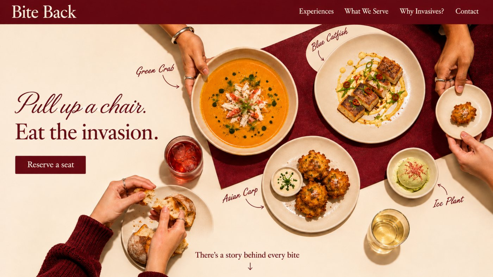
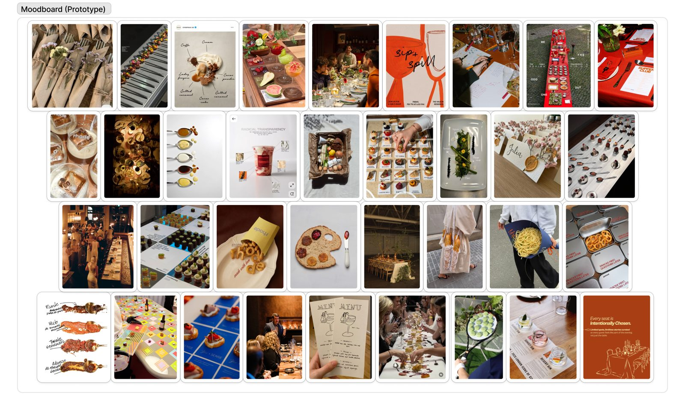
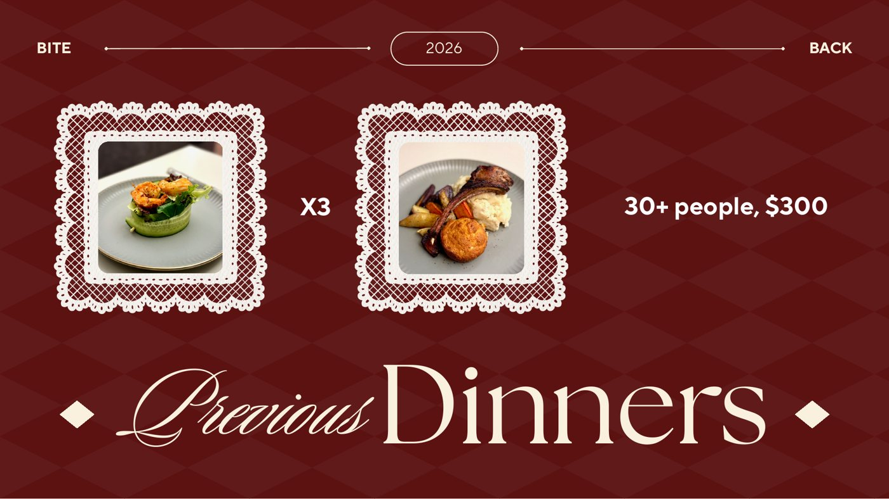
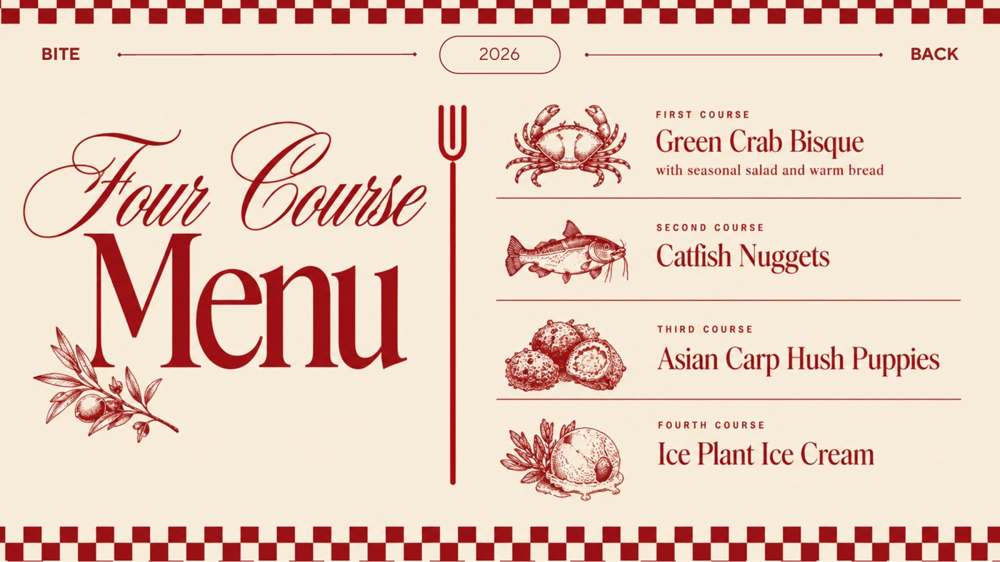
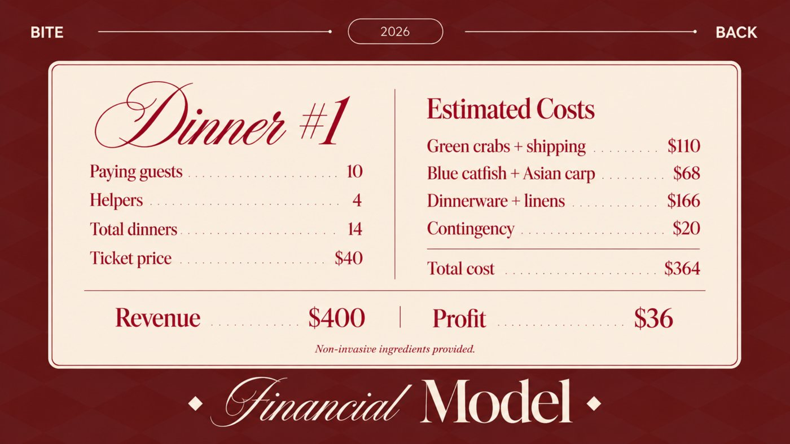
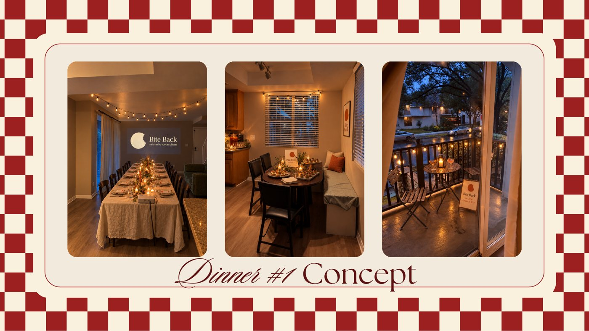

Fall 2026 to now · IYA Garage Experience
Bite Back
Problem statement
An adventurous eater who feels unsure about eating invasive species needs to taste them and hear why they matter, but they almost never show up on a menu.
How It Went
-
Fall 2026Business
What GX Is
GX is the Garage Experience, the Iovine and Young Academy's senior capstone. It's a student-led research and development project that runs two semesters, with mentorship from faculty and people in industry. You pick the problem, and you have the whole year to build toward it.
-
Fall 2026Product
Invasiv
It started as Invasiv, a food product made from invasive species. Then we tried invasive food consulting. Then back to products: a brand making different things from invasive species.
-
Fall 2026Research
Nobody's Eating Them
Lots of invasive species are edible. People just don't know they're available, what they taste like, or that eating them helps. It's exposure, and it's what we think belongs in our diets.
$21Ba year: what invasive species cost the U.S.6–7exposures before people start liking a new foodSource: Fantle-Lepczyk et al., Science of the Total Environment (2022); chef Bun Lai via CBC
-
Oct 2026Design
Pull up a Chair
So it became a dinner. Chef-led small plates made from edible invasive species, with the story behind each one. Familiar formats make a new ingredient easier to try.
It's for adventurous eaters, 21 to 35, who care about the environment and like a curated night out.
- Discover: see the menu and the concept
- Book: reserve a seat and share dietary needs
- Arrive and eat: small plates, a story with each
- Take away: recipes and where to find the ingredients locally
- Follow up: a short survey

A dinner is a familiar format, which makes a new ingredient easier to try. -
Oct 2026Design
Mood Board
Supper clubs, handwritten menus, ingredients labeled right on the plate, long tables with candles. Warm, a little playful, and close enough to touch.

Supper clubs, handwritten menus and labels on the plate: warm, a little playful, close enough to touch. -
Oct 2026Research
Why Animals
We focus on invasive animals over plants. They're easier to source. For plants, our only real option was basically trespassing.
-
Oct 2026Research
Three Test Dinners
Before calling it anything, we hosted three test dinners. 30+ people came and we made $300. We also got 10 email signups and 12 QR scans on campus.

Three test dinners before we called it anything: 30+ people and $300. -
Nov 2026Design
Four Courses
Every dish is built around an invasive species.
- Green crab bisque, with seasonal salad and warm bread
- Catfish nuggets
- Asian carp hush puppies
- Ice plant ice cream

Every course is built around an invasive species. -
Nov 2026Business
Does It Make Money?
Dinner #1 is 10 paying guests at $40. That's $400 in, $364 in costs, and $36 left over. Small, but it breaks even, which is the goal.
Bigger picture: about $11M a year in LA adults 20 to 34 who'd book a dinner like this, and about $43K we could realistically capture by year two.
Source: Market Intelo Supper Club Market Report (2025); U.S. Census ACS, Los Angeles County; Bite Back estimates

10 guests at $40 breaks even with $36 left over, which is the goal for Dinner #1. -
Nov 2026Business
Who Else Is Doing This
There are one-night invasive dinners in Vancouver and Kauaʻi, invasive restaurants in Connecticut and London, and supper clubs all over LA. Nobody is doing recurring invasive species dinners in LA at $40 a seat.
-
Nov 2026Business
Every Dinner Becomes Content
10 people at the table, thousands watching online. We host, film, post, grow, then scale. Our socials are set up at @biteback.la and we're drafting posts now. The goal is 50K followers by May 2027.
-
Dec 2026Product
Dinner #1
A 10-person dinner for IYA's C10 cohort. We want to see who shows up, what they'll pay, and whether it breaks even.

Looking Back
- What worked
- Finding something niche. Eating invasive species is a modern take on environmental activism.
- What I'd do differently
- I was into an animal product we could get into Erewhon, and I still think it could happen. We went with dinners because they were the most doable within the school year.
- What's next
- Getting noticed among everything else in your feed. We're submitting a grant application, posting before our first small plates dinner in December, and aiming for 10K followers over winter break off that first dinner's content. We're also looking at pairing the invasive species with ingredients that are actually good for you, so eating it helps you as well as the planet. Stay tuned on our Instagram.